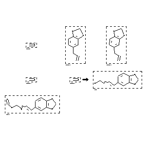

|  |
| FA | RX(1); FLST(1); RX(1) |
Reaction (1 of 1)
| Reaction ID | 132132 |
| Reactant BRN | 1209228; 136380 |
| Reactant | formaldehyde; 5-allyl-benzo[1,3]dioxole |
| Product BRN | 9656; 16713 |
| Product | 4x-benzo[1,3]dioxol-5-yl-but-3-en-1-ol; formic acid-(4x-benzo[1,3]dioxol-5-yl-but-3-enyl ester) |
| No. of Reaction Details | 1 |
Reaction Details (1 of 1)
| Reaction Classification | Chemical behaviour |
| Temperature | 220 |
| Comment | Handbook |
| Citation Pointer | 514831; Journal; Kuraoka; Sugawara; NPKZAZ; Nippon Kagaku Zasshi; 79; 1958; 1161; Chem.Abstr.; 1960; 4479; |
Reference (1 of 1)
| Citation Number | 514831 |
| Document Type | Journal |
| Authors | Kuraoka; Sugawara |
| CODEN | NPKZAZ |
| Journal Title | Nippon Kagaku Zasshi |
| Journal/Review Without CODEN | Chem.Abstr. |
| (Series) Volume | 79 |
| Publication Year | 1958; 1960 |
| Page | 1161; 4479 |